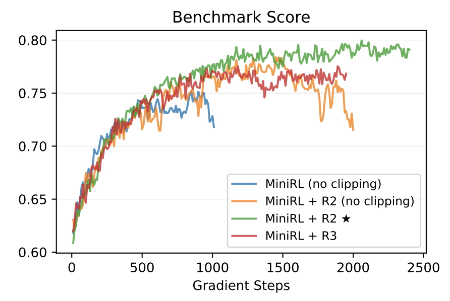
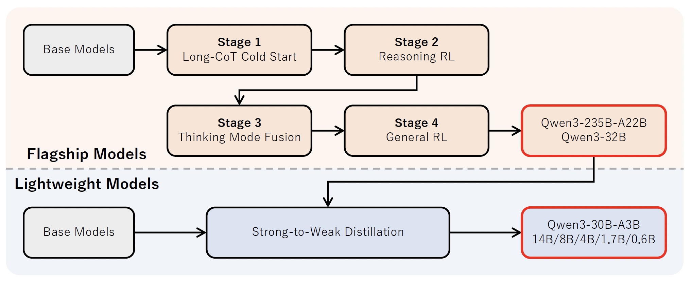
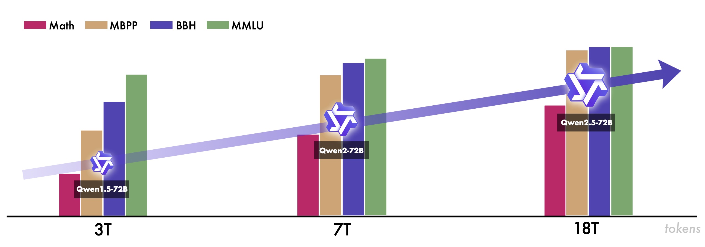

Hao Lin @ Alibaba Cloud
 |
 Hao Lin R&D Engineer, Platform of Artificial Intelligence (PAI), Alibaba Cloud, Hangzhou, Zhejiang, China. |
Biography
Currently, I am a R&D engineer in the Platform of Artificial Intelligence (PAI) of Alibaba Cloud Group. My research interest includes machine learning systems and reinforcement learning systems.
Prior to this position, I received Master degree from Department of Computer Science and Technology of Nanjing University in June, 2024. My supervisor was Professor Wu-Jun Li.
Before that, I received B.Sc. degree from Department of Computer Science and Technology of Nanjing University in June, 2021. In the same year, I was admitted to pursue my Master degree without entrance examination.
Education
- Master, Nanjing University, China. (09/2021 ~ 06/2024)
- Supervisor: Professor Wu-Jun Li.
- Major: Computer Science and Technology.
- Thesis: Automatic Parallelism Methods for Distributed Machine Learning.
- B.Sc., Nanjing University, China. (09/2017 ~ 06/2021)
- Supervisor: Professor Wu-Jun Li.
- Major: Computer Science and Technology.
- GPA: 4.51/5.00, Rank: 11/173.
Working Experience
- Platform Framework and Optimization R&D Engineer. Alibaba Cloud Group (06/2024 ~ Now)
- Project 1: ChatLearn, a flexible and efficient large-scale RLHF framework.
- Role: core contributor.
- Responsibility: integrating Mixture-of-Expert (MoE) models, developing core framework, and enhancing system quality attributes.
- Outcomes: Qwen2.5, Qwen2.5-Max, QwQ-32B-preview, and QwQ-Max-Preview
- Project 2: In-house fork from veRL, a reinforcement learning framework for LLMs.
- Role: core contributor.
- Responsibility: developing core framework and integrating the Megatron-Core backend for very large models.
- Outcomes: Qwen3 series models
- Platform Framework and Optimization R&D Intern. Alibaba Cloud Group (06/2023 ~ 09/2023)
- Project: ChatLearn, a flexible and efficient large-scale RLHF framework.
- Deep Learning Framework R&D Intern. Baidu Co., Ltd. (06/2021 ~ 08/2021)
Publication and Preprint
|  |
We propose a new formulation for reinforcement learning with LLMs, viewing the token-level optimization objective as a first-order approximation to the true expected sequence-level reward. |
 |
We propose an automatic parallelism framework UniAP. It utilizes MIQP to jointly optimize DP, TP, FSDP, and PP to enhance efficiency in training large models. Experimental results show that UniAP outperforms SOTA by up to 3.80x in throughput and reduces strategy optimization time by up to 107x across five Transformer-based models. |
|  |
We present Qwen3 series models, including models of both dense and Mixture-of-Expert (MoE) architectures. In Qwen3, we integrate thinking mode and non-thinking mode into a unified framework. Empirical evaluations demonstrate that Qwen3 achieves state-of-the-art results across diverse benchmarks. |
|  |
We introduce Qwen2.5, a comprehensive series of large language models (LLMs). Qwen2.5 has demonstrated top-tier performance on a wide range of benchmarks. Additionally, Qwen2.5 models have been instrumental in training specialized models such as Qwen2.5-Math, Qwen2.5-Coder, QwQ, and multimodal models. |
(*: equal contribution. †: corresponding author. ‡: one of the contributors)
Award
南京大学优秀毕业生. Outstanding Graduates of Nanjing University. (04/2024)
南京大学优秀研究生. Excellent Graduate Student of Nanjing University. (11/2023)
学业奖学金一等奖. The First Prize of Academic Scholarship. (11/2021, 11/2022, 11/2023)
福佑奖学金. Fuyou Scholarship. (12/2020)
国家奖学金. National Scholarship. (09/2019)
南京大学优秀学生. Excellent Student of Nanjing University. (12/2019)
南京大学人民奖学金二等奖. The Second Prize of the People's Scholarship. (11/2018)
Invited Talk
Teaching Assistant
C程序设计语言. C Programming Language. (For undergraduate students, Spring 2023)
数据库概论. Introduction to Databases. (For undergraduate students, Autumn 2022)
程序设计基础. Basics of Programming. (For undergraduate students, Spring 2022)
Correspondence
E-mail Address
baodong.lh{AT}alibaba-inc.com (Business)
hao.lin.msc{AT}gmail.com (Private)